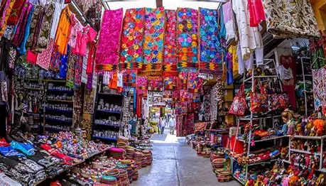

"Visita nuestro pueblo mágico"
"Valle de Bravo"
El Museo de Arte Popular de Valle de Bravo es un espacio cultural dedicado a exhibir, conservar y difundir las expresiones artísticas tradicionales de México. Su colección pertenece a la Fundación Mama Viña y Oscar, que busca preservar el patrimonio cultural mexicano y reconocer el trabajo de los artesanos.
Este museo es importante porque conserva las tradiciones, técnicas y conocimientos transmitidos de generación en generación. También permite conocer la diversidad cultural de México y valorar el talento de sus artesanos.
